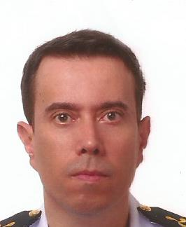

Eng. Sandro Flores Tilmann
Apresentação
Sou Cientista da Computação em formação e Engenheiro de Software, com uma sólida base prévia em Engenharia Elétrica, Eletrônica e Telecomunicações. Aprecio profundamente a convivência com a natureza e as experiências proporcionadas por viagens, que ampliam minha capacidade de adaptação.
Sou uma pessoa sincera e leal, com postura responsável e colaborativa no ambiente profissional, buscando sempre aliar a lógica rigorosa da engenharia com a inovação do desenvolvimento de sistemas modernos.

Hobbies e Interesses
- Viagens: Explorador de novos destinos e culturas, estimulando adaptabilidade e planejamento.
- Natureza (Trilhas): Conexão com sustentabilidade, bem-estar e gestão de riscos.
- Animais de Estimação: Dedicação, empatia e sensibilidade à vida animal.
- Igreja e Comunidade: Participação em projetos sociais, reforçando o trabalho voluntário e a liderança.
- Natação: Prática regular orientada a metas, resistência e autocontrole.